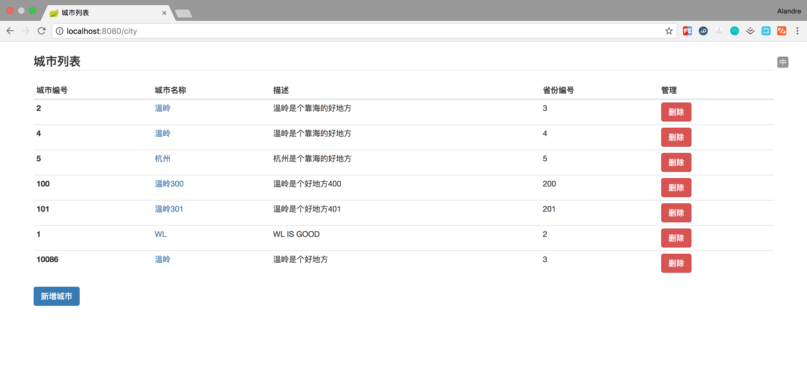
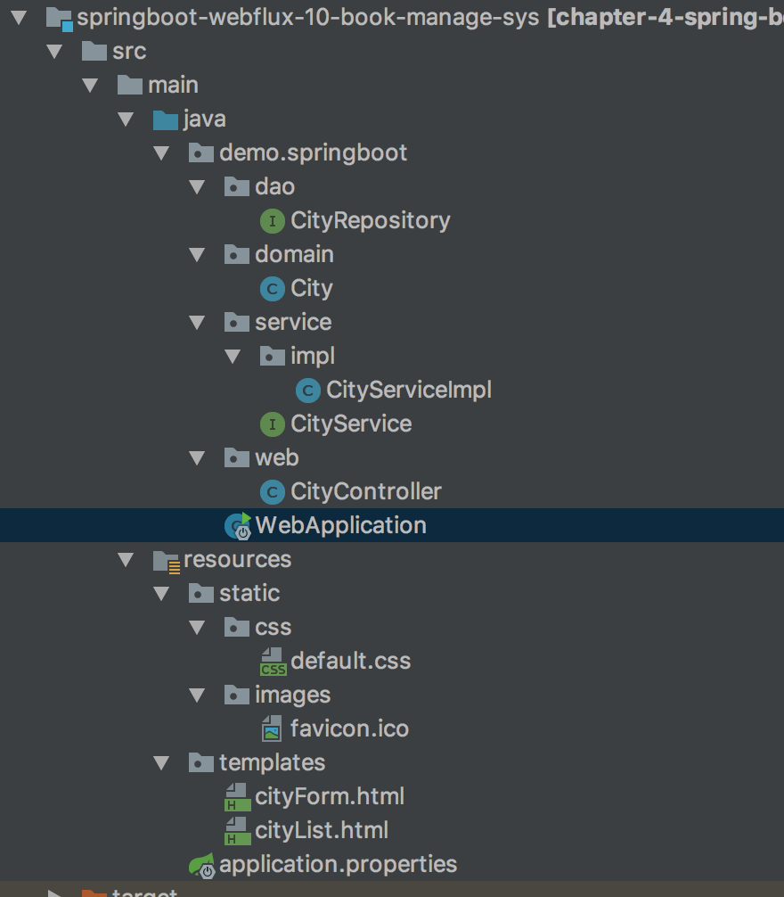
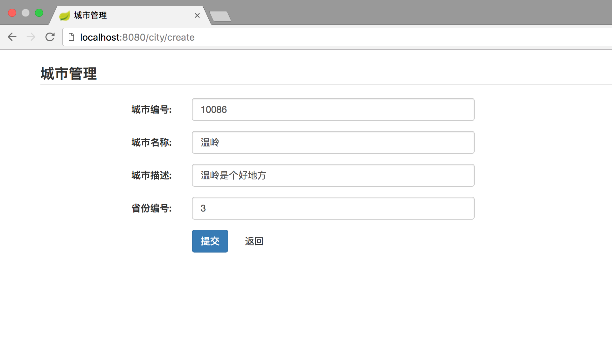

- 01 导读：课程概要.md.html
- 02 WebFlux 快速入门实践.md.html
- 03 WebFlux Web CRUD 实践.md.html
- 04 WebFlux 整合 MongoDB.md.html
- 05 WebFlux 整合 Thymeleaf.md.html
- 06 WebFlux 中 Thymeleaf 和 MongoDB 实践.md.html
- 07 WebFlux 整合 Redis.md.html
- 08 WebFlux 中 Redis 实现缓存.md.html
- 09 WebFlux 中 WebSocket 实现通信.md.html
- 10 WebFlux 集成测试及部署.md.html
- 11 WebFlux 实战图书管理系统.md.html
- 捐赠
11 WebFlux 实战图书管理系统
前言
本篇内容我们会实现如下图所示的城市管理系统，因为上面案例都用的是 City，所以这里直接使用城市作为对象，写一个简单的城市管理系统，如图所示：

结构
类似上面讲的工程搭建，新建一个工程编写此案例。工程如图：

下面目录和上面类似，这边不重复讲解：
- pom.xml Maven 依赖配置
- application.properties 配置文件，配置 mongo 连接属性配置
- dao 数据访问层
本文主要介绍：
- controller 控制层实现
- static 存放 css 图片静态资源
- templates 编写页面逻辑
CityController 控制层
使用注解驱动的模式来进行开发，代码如下：
/**
* city 控制层
* <p>
* Created by bysocket
*/
@Controller
@RequestMapping(value = "/city")
public class CityController {
private static final String CITY_FORM_PATH_NAME = "cityForm";
private static final String CITY_LIST_PATH_NAME = "cityList";
private static final String REDIRECT_TO_CITY_URL = "redirect:/city";
@Autowired
CityService cityService;
@RequestMapping(method = RequestMethod.GET)
public String getCityList(final Model model) {
model.addAttribute("cityList", cityService.findAll());
return CITY_LIST_PATH_NAME;
}
@RequestMapping(value = "/create", method = RequestMethod.GET)
public String createCityForm(final Model model) {
model.addAttribute("city", new City());
model.addAttribute("action", "create");
return CITY_FORM_PATH_NAME;
}
@RequestMapping(value = "/create", method = RequestMethod.POST)
public String postCity(@ModelAttribute City city) {
cityService.insertByCity(city);
return REDIRECT_TO_CITY_URL;
}
@RequestMapping(value = "/update/{id}", method = RequestMethod.GET)
public String getCity(@PathVariable Long id, final Model model) {
final Mono<City> city = cityService.findById(id);
model.addAttribute("city", city);
model.addAttribute("action", "update");
return CITY_FORM_PATH_NAME;
}
@RequestMapping(value = "/update", method = RequestMethod.POST)
public String putBook(@ModelAttribute City city) {
cityService.update(city);
return REDIRECT_TO_CITY_URL;
}
@RequestMapping(value = "/delete/{id}", method = RequestMethod.GET)
public String deleteCity(@PathVariable Long id) {
cityService.delete(id);
return CITY_LIST_PATH_NAME;
}
}
可以创建不同功能的控制层，来处理不同的 HTTP 业务请求，比如 CityFrontController、CityAdminController 等分别处理不同场景的问题。
- getCityList 方法：处理“/city”的 GET 请求，用来获取 City 列表。
- getCity 方法：处理“/city/update/{id}”的 GET 请求，用来获取 City 信息。
- postCity 方法：处理“/book/create”的 POST 请求，用来新建 Book 信息；通过 @ModelAttribut 绑定实体参数，也通过 @RequestBody @RequestParam 传递参数。
- putCity 方法：处理“/update”的 PUT 请求，用来更新 City 信息，并使用 redirect 重定向到列表页面。
cityForm 提交表单页面
表单页面如下：
<!DOCTYPE html>
<html lang="zh-CN">
<head>
<script type="text/javascript" th:src="@{https://cdn.bootcss.com/jquery/3.2.1/jquery.min.js}"></script>
<link th:href="@{https://cdn.bootcss.com/bootstrap/3.3.7/css/bootstrap.min.css}" rel="stylesheet"/>
<link th:href="@{/css/default.css}" rel="stylesheet"/>
<link rel="icon" th:href="@{/images/favicon.ico}" type="image/x-icon"/>
<meta charset="UTF-8"/>
<title>城市管理</title>
</head>
<body>
<div class="contentDiv">
<legend>
<strong>城市管理</strong>
</legend>
<form th:action="@{/city/{action}(action=${action})}" method="post" class="form-horizontal">
<div class="form-group">
<label for="city_id" class="col-sm-2 control-label">城市编号:</label>
<div class="col-xs-4">
<input type="text" class="form-control" id="city_id" name="id" th:value="${city.id}"/>
</div>
</div>
<div class="form-group">
<label for="city_name" class="col-sm-2 control-label">城市名称:</label>
<div class="col-xs-4">
<input type="text" class="form-control" id="city_name" name="cityName" th:value="${city.cityName}"/>
</div>
</div>
<div class="form-group">
<label for="city_description" class="col-sm-2 control-label">城市描述:</label>
<div class="col-xs-4">
<input class="form-control" id="city_description" rows="3" name="description"
th:value="${city.description}" />
</div>
</div>
<div class="form-group">
<label for="city_provinceId" class="col-sm-2 control-label">省份编号:</label>
<div class="col-xs-4">
<input type="text" class="form-control" id="city_provinceId" name="provinceId" th:value="${city.provinceId}"
/>
</div>
</div>
<div class="form-group">
<div class="col-sm-offset-2 col-sm-10">
<input class="btn btn-primary" type="submit" value="提交"/>
<input class="btn" type="button" value="返回" onclick="history.back()"/>
</div>
</div>
</form>
</div>
</body>
</html>
利用的是 Thymeleaf 语法，上面章节也讲过具体使用方法，这里实现新增城市和更新城市两个操作。巧妙利用了 action 字段去动态判断请求是新增还是更新的控制层方法，然后进行 form 表单提交。
cityList 城市列表页面
列表页面代码如下：
<!DOCTYPE html>
<html lang="zh-CN">
<head>
<script type="text/javascript" th:src="@{https://cdn.bootcss.com/jquery/3.2.1/jquery.min.js}"></script>
<link th:href="@{https://cdn.bootcss.com/bootstrap/3.3.7/css/bootstrap.min.css}" rel="stylesheet"/>
<link th:href="@{/css/default.css}" rel="stylesheet"/>
<link rel="icon" th:href="@{/images/favicon.ico}" type="image/x-icon"/>
<meta charset="UTF-8"/>
<title>城市列表</title>
</head>
<body>
<div class="contentDiv">
<table class="table table-hover table-condensed">
<legend>
<strong>城市列表</strong>
</legend>
<thead>
<tr>
<th>城市编号</th>
<th>城市名称</th>
<th>描述</th>
<th>省份编号</th>
<th>管理</th>
</tr>
</thead>
<tbody>
<tr th:each="city : ${cityList}">
<th scope="row" th:text="${city.id}"></th>
<td><a th:href="@{/city/update/{cityId}(cityId=${city.id})}" th:text="${city.cityName}"></a></td>
<td th:text="${city.description}"></td>
<td th:text="${city.provinceId}"></td>
<td><a class="btn btn-danger" th:href="@{/city/delete/{cityId}(cityId=${city.id})}">删除</a></td>
</tr>
</tbody>
</table>
<div><a class="btn btn-primary" href="/city/create" role="button">新增城市</a></div>
</div>
</body>
</html>
这里编写了一个列表对象的循环和简单的页面跳转逻辑，下面看看这两个页面组合使用的运行场景。
运行工程
一个 CRUD 的 Spring Boot Webflux 工程就开发完毕了，下面运行工程验证一下。使用 IDEA 右侧工具栏，点击 Maven Project Tab 选项，单击使用下 Maven 插件的 install 命令；或者使用命令行的形式，在工程根目录下，执行 Maven 清理和安装工程的指令：
cd springboot-webflux-10-book-manage-sys
mvn clean install
在控制台中看到成功的输出：
... 省略
[INFO] ------------------------------------------------------------------------
[INFO] BUILD SUCCESS
[INFO] ------------------------------------------------------------------------
[INFO] Total time: 01:30 min
[INFO] Finished at: 2017-10-15T10:00:54+08:00
[INFO] Final Memory: 31M/174M
[INFO] ------------------------------------------------------------------------
在 IDEA 中执行 Application 类启动，任意正常模式或者 Debug 模式，可以在控制台看到成功运行的输出：
... 省略
2018-04-10 08:43:39.932 INFO 2052 --- [ctor-http-nio-1] r.ipc.netty.tcp.BlockingNettyContext : Started HttpServer on /0:0:0:0:0:0:0:0:8080
2018-04-10 08:43:39.935 INFO 2052 --- [ main] o.s.b.web.embedded.netty.NettyWebServer : Netty started on port(s): 8080
2018-04-10 08:43:39.960 INFO 2052 --- [ main] org.spring.springboot.Application : Started Application in 6.547 seconds (JVM running for 9.851)
打开浏览器，输入地址：http://localhost:8080/city，即打开城市列表页面：

然后新增，或者单击城市名称修改，到表单提交页面：

总结
这里，初步实现了小案例城市管理系统，基本满足日常的 CRUD 业务流程操作。上手教程只是上手，具体复杂逻辑，欢迎一起多交流学习。
© 2019 - 2023 Liangliang Lee. Powered by gin and hexo-theme-book.